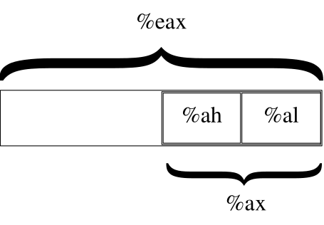

Your First Programs¶
In this chapter you will learn the process for writing and building Linux assembly-language programs. In addition, you will learn the structure of assembly-language programs, and a few assembly-language commands. As you go through this chapter, you may want to refer also to Common x86 Instructions and Using the GDB Debugger.
These programs may overwhelm you at first. However, go through them with diligence, read them and their explanations as many times as necessary, and you will have a solid foundation of knowledge to build on. Please tinker around with the programs as much as you can. Even if your tinkering does not work, every failure will help you learn.
Entering in the Program¶
Okay, this first program is simple. In fact, it’s not going to do
anything but exit! It’s short, but it shows some basics about assembly
language and Linux programming. You need to enter the program in an
editor exactly as written, with the filename exit.s. The program
follows. Don’t worry about not understanding it. This section only deals
with typing it in and running it. In Outline of an Assembly Language
Program we will describe how it works.
1 #PURPOSE: Simple program that exits and returns a
2 # status code back to the Linux kernel
3 #
4
5 #INPUT: none
6 #
7
8 #OUTPUT: returns a status code. This can be viewed
9 # by typing
10 #
11 # echo $?
12 #
13 # after running the program
14 #
15
16 #VARIABLES:
17 # %eax holds the system call number
18 # %ebx holds the return status
19 #
20 .section .data
21
22 .section .text
23 .globl _start
24_start:
25 movl $1, %eax # this is the linux kernel command
26 # number (system call) for exiting
27 # a program
28
29 movl $0, %ebx # this is the status number we will
30 # return to the operating system.
31 # Change this around and it will
32 # return different things to
33 # echo $?
34
35 int $0x80 # this wakes up the kernel to run
36 # the exit command
What you have typed in is called the source code. Source code is the human-readable form of a program. In order to transform it into a program that a computer can run, we need to assemble and link it.
The first step is to assemble it. Assembling is the process that transforms what you typed into instructions for the machine. The machine itself only reads sets of numbers, but humans prefer words. An assembly language is a more human-readable form of the instructions a computer understands. Assembling transforms the human-readable file into a machine-readable one. To assembly the program type in the command
as --32 exit.s -o exit.o
as is the command which runs the assembler, exit.s is the source
file, and -o exit.o tells the assemble to put its output in the file
exit.o. exit.o is an object file. An object file is code that
is in the machine’s language, but has not been completely put together.
In most large programs, you will have several source files, and you will
convert each one into an object file. The linker is the program that
is responsible for putting the object files together and adding
information to it so that the kernel knows how to load and run it. In
our case, we only have one object file, so the linker is only adding the
information to enable it to run. To link the file, enter the command
ld -m elf_i386 exit.o -o exit
ld is the command to run the linker, exit.o is the object file
we want to link, and -o exit instructs the linker to output the new
program into a file called exit. [1] If any of these commands
reported errors, you have either mistyped your program or the command.
After correcting the program, you have to re-run all the commands. You
must always re-assemble and re-link programs after you modify the source
file for the changes to occur in the program. You can run exit by
typing in the command
./exit
The ./ is used to tell the computer that the program isn’t in one of
the normal program directories, but is the current directory
instead [2]. You’ll notice when you type this command, the only thing
that happens is that you’ll go to the next line. That’s because this
program does nothing but exit. However, immediately after you run the
program, if you type in
echo $?
It will say 0. What is happening is that every program when it exits
gives Linux an exit status code, which tells it if everything went all
right. If everything was okay, it returns 0. UNIX programs return
numbers other than zero to indicate failure or other errors, warnings,
or statuses. The programmer determines what each number means. You can
view this code by typing in echo $?. In the following section we
will look at what each part of the code does.
Outline of an Assembly Language Program¶
Take a look at the program we just entered. At the beginning there are
lots of lines that begin with hashes (#). These are comments.
Comments are not translated by the assembler. They are used only for the
programmer to talk to anyone who looks at the code in the future. Most
programs you write will be modified by others. Get into the habit of
writing comments in your code that will help them understand both why
the program exists and how it works. Always include the following in
your comments:
The purpose of the code
An overview of the processing involved
Anything strange your program does and why it does it [3]
After the comments, the next line says
.section .data
Anything starting with a period isn’t directly translated into a machine
instruction. Instead, it’s an instruction to the assembler itself. These
are called assembler directives or pseudo-operations because they
are handled by the assembler and are not actually run by the computer.
The .section command breaks your program up into sections. This
command starts the data section, where you list any memory storage you
will need for data. Our program doesn’t use any, so we don’t need the
section. It’s just here for completeness. Almost every program you write
in the future will have data.
Right after this you have
.section .text
which starts the text section. The text section of a program is where the program instructions live.
The next instruction is
.globl _start
This instructs the assembler that _start is important to remember.
_start is a symbol, which means that it is going to be replaced by
something else either during assembly or linking. Symbols are generally
used to mark locations of programs or data, so you can refer to them by
name instead of by their location number. Imagine if you had to refer to
every memory location by its address. First of all, it would be very
confusing because you would have to memorize or look up the numeric
memory address of every piece of code or data. In addition, every time
you had to insert a piece of data or code you would have to change all
the addresses in your program! Symbols are used so that the assembler
and linker can take care of keeping track of addresses, and you can
concentrate on writing your program.
.globl means that the assembler shouldn’t discard this symbol after
assembly, because the linker will need it. _start is a special
symbol that always needs to be marked with .globl because it marks
the location of the start of the program. Without marking this location
in this way, when the computer loads your program it won’t know where to
begin running your program.
The next line
_start:
defines the value of the _start label. A label is a symbol
followed by a colon. Labels define a symbol’s value. When the assembler
is assembling the program, it has to assign each data value and
instruction an address. Labels tell the assembler to make the symbol’s
value be wherever the next instruction or data element will be. This
way, if the actual physical location of the data or instruction changes,
you don’t have to rewrite any references to it - the symbol
automatically gets the new value.
Now we get into actual computer instructions. The first such instruction is this:
movl $1, %eax
When the program runs, this instruction transfers the number 1 into
the %eax; register. In assembly language, many instructions have
operands. movl has two operands - the source and the
destination. In this case, the source is the literal number 1, and the
destination is the %eax; register. Operands can be numbers,
memory location references, or registers. Different instructions allow
different types of operands. See Common x86 Instructions for
more information on which instructions take which kinds of operands.
On most instructions which have two operands, the first one is the
source operand and the second one is the destination. Note that in these
cases, the source operand is not modified at all. Other instructions of
this type are, for example, addl, subl, and imull. These
add/subtract/multiply the source operand from/to/by the destination
operand and and save the result in the destination operand. Other
instructions may have an operand hardcoded in. idivl, for example,
requires that the dividend be in %eax;, and %edx; be zero,
and the quotient is then transferred to %eax; and the remainder
to %edx;. However, the divisor can be any register or memory
location.
On x86 processors, there are several general-purpose registers [4] (all
of which can be used with movl):
%eax;
%ebx;
%ecx;
%edx;
%edi;
%esi;
In addition to these general-purpose registers, there are also several special-purpose registers, including:
%ebp;
%esp;
%eip;
%eflags;
We’ll discuss these later, just be aware that they exist. [5] Some of these registers, like %eip; and %eflags; can only be accessed through special instructions. The others can be accessed using the same instructions as general-purpose registers, but they have special meanings, special uses, or are simply faster when used in a specific way.
So, the movl instruction moves the number 1 into %eax. The
dollar-sign in front of the one indicates that we want to use immediate
mode addressing (refer back to Data Accessing Methods). Without
the dollar-sign it would do direct addressing, loading whatever number
is at address 1. We want the actual number 1 loaded in, so we
have to use immediate mode.
The reason we are moving the number 1 into %eax; is because we
are preparing to call the Linux Kernel. The number 1 is the number
of the exit system call . We will discuss system calls in more
depth soon, but basically they are requests for the operating system’s
help. Normal programs can’t do everything. Many operations such as
calling other programs, dealing with files, and exiting have to be
handled by the operating system through system calls. When you make a
system call, which we will do shortly, the system call number has to be
loaded into %eax; (for a complete listing of system calls
and their numbers, see Important System Calls). Depending on the system
call, other registers may have to have values in them as well. Note that
system calls is not the only use or even the main use of registers. It
is just the one we are dealing with in this first program. Later
programs will use registers for regular computation.
The operating system, however, usually needs more information than just
which call to make. For example, when dealing with files, the operating
system needs to know which file you are dealing with, what data you want
to write, and other details. The extra details, called parameters are
stored in other registers. In the case of the exit system call, the
operating system requires a status code be loaded in
%ebx;. This value is then returned to the system. This is
the value you retrieved when you typed echo $?. So, we load
%ebx; with 0 by typing the following:
movl $0, %ebx
Now, loading registers with these numbers doesn’t do anything itself.
Registers are used for all sorts of things besides system calls. They
are where all program logic such as addition, subtraction, and
comparisons take place. Linux simply requires that certain registers be
loaded with certain parameter values before making a system call.
%eax; is always required to be loaded with the system
call number. For the other registers, however, each system call has
different requirements. In the exit system call,
%ebx; is required to be loaded with the exit status. We
will discuss different system calls as they are needed. For a list of
common system calls and what is required to be in each register, see
Important System Calls
The next instruction is the “magic” one. It looks like this:
int $0x80
The int stands for interrupt. The 0x80 is the interrupt
number to use. [6] An interrupt interrupts the normal program flow,
and transfers control from our program to Linux so that it will do a
system call. [7]. You can think of it as like signaling Batman(or
Larry-Boy [8], if you prefer). You need something done, you send the
signal, and then he comes to the rescue. You don’t care how he does his
work - it’s more or less magic - and when he’s done you’re back in
control. In this case, all we’re doing is asking Linux to terminate the
program, in which case we won’t be back in control. If we didn’t signal
the interrupt, then no system call would have been performed.
Note
To recap - Operating System features are accessed through system
calls. These are invoked by setting up the registers in a special way
and issuing the instruction int $0x80. Linux knows which system
call we want to access by what we stored in the %eax;
register. Each system call has other requirements as to what needs to
be stored in the other registers. System call number 1 is the
exit system call, which requires the status code to be placed in
%ebx;.
Now that you’ve assembled, linked, run, and examined the program, you
should make some basic edits. Do things like change the number that is
loaded into %ebx, and watch it come out at the end with
echo$?. Don’t forget to assemble and link it again before
running it. Add some comments. Don’t worry, the worse thing that would
happen is that the program won’t assemble or link, or will freeze your
screen. That’s just part of learning!
Planning the Program¶
In our next program we will try to find the maximum of a list of numbers. Computers are very detail-oriented, so in order to write the program we will have to have planned out a number of details. These details include:
Where will the original list of numbers be stored?
What procedure will we need to follow to find the maximum number?
How much storage do we need to carry out that procedure?
Will all of the storage fit into registers, or do we need to use some memory as well?
You might not think that something as simple as finding the maximum number from a list would take much planning. You can usually tell people to find the maximum number, and they can do so with little trouble. However, our minds are used to putting together complex tasks automatically. Computers need to be instructed through the process. In addition, we can usually hold any number of things in our mind without much trouble. We usually don’t even realize we are doing it. For example, if you scan a list of numbers for the maximum, you will probably keep in mind both the highest number you’ve seen so far, and where you are in the list. While your mind does this automatically, with computers you have to explicitly set up storage for holding the current position on the list and the current maximum number. You also have other problems such as how to know when to stop. When reading a piece of paper, you can stop when you run out of numbers. However, the computer only contains numbers, so it has no idea when it has reached the last of your numbers.
In computers, you have to plan every step of the way. So, let’s do a
little planning. First of all, just for reference, let’s name the
address where the list of numbers starts as data_items. Let’s say
that the last number in the list will be a zero, so we know where to
stop. We also need a value to hold the current position in the list, a
value to hold the current list element being examined, and the current
highest value on the list. Let’s assign each of these a register:
%edi; will hold the current position in the list.
%ebx; will hold the current highest value in the list.
%eax; will hold the current element being examined.
When we begin the program and look at the first item in the list, since we haven’t seen any other items, that item will automatically be the current largest element in the list. Also, we will set the current position in the list to be zero - the first element. From then, we will follow the following steps:
Check the current list element (%eax;) to see if it’s zero (the terminating element).
If it is zero, exit.
Increase the current position (%edi;).
Load the next value in the list into the current value register (%eax;). What addressing mode might we use here? Why?
Compare the current value (%eax;) with the current highest value (%ebx;).
If the current value is greater than the current highest value, replace the current highest value with the current value.
Repeat.
That is the procedure. Many times in that procedure I made use of the word “if”. These places are where decisions are to be made. You see, the computer doesn’t follow the exact same sequence of instructions every time. Depending on which “if”s are correct, the computer may follow a different set of instructions. The second time through, it might not have the highest value. In that case, it will skip step 6, but come back to step 7. In every case except the last one, it will skip step 2. In more complicated programs, the skipping around increases dramatically.
These “if”s are a class of instructions called flow control instructions, because they tell the computer which steps to follow and which paths to take. In the previous program, we did not have any flow control instructions, as there was only one possible path to take - exit. This program is much more dynamic in that it is directed by data. Depending on what data it receives, it will follow different instruction paths.
In this program, this will be accomplished by two different instructions, the conditional jump and the unconditional jump. The conditional jump changes paths based on the results of a previous comparison or calculation. The unconditional jump just goes directly to a different path no matter what. The unconditional jump may seem useless, but it is very necessary since all of the instructions will be laid out on a line. If a path needs to converge back to the main path, it will have to do this by an unconditional jump. We will see more of both of these jumps in the next section.
Another use of flow control is in implementing loops. A loop is a piece of program code that is meant to be repeated. In our example, the first part of the program (setting the current position to 0 and loading the current highest value with the current value) was only done once, so it wasn’t a loop. However, the next part is repeated over and over again for every number in the list. It is only left when we have come to the last element, indicated by a zero. This is called a loop because it occurs over and over again. It is implemented by doing unconditional jumps to the beginning of the loop at the end of the loop, which causes it to start over. However, you have to always remember to have a conditional jump to exit the loop somewhere, or the loop will continue forever! This condition is called an infinite loop. If we accidentally left out step 1, 2, or 3, the loop (and our program) would never end.
In the next section, we will implement this program that we have planned. Program planning sounds complicated - and it is, to some degree. When you first start programming, it’s often hard to convert our normal thought process into a procedure that the computer can understand. We often forget the number of “temporary storage locations” that our minds are using to process problems. As you read and write programs, however, this will eventually become very natural to you. Just have patience.
Finding a Maximum Value¶
Enter the following program as maximum.s:
1 #PURPOSE: This program finds the maximum number of a
2 # set of data items.
3 #
4
5 #VARIABLES: The registers have the following uses:
6 #
7 # %edi - Holds the index of the data item being examined
8 # %ebx - Largest data item found
9 # %eax - Current data item
10 #
11 # The following memory locations are used:
12 #
13 # data_items - contains the item data. A 0 is used
14 # to terminate the data
15 #
16
17 .section .data
18
19data_items: #These are the data items
20 .long 3,67,34,222,45,75,54,34,44,33,22,11,66,0
21
22 .section .text
23
24 .globl _start
25_start:
26 movl $0, %edi # move 0 into the index register
27 movl data_items(,%edi,4), %eax # load the first byte of data
28 movl %eax, %ebx # since this is the first item, %eax is
29 # the biggest
30
31start_loop: # start loop
32 cmpl $0, %eax # check to see if we've hit the end
33 je loop_exit
34 incl %edi # load next value
35 movl data_items(,%edi,4), %eax
36 cmpl %ebx, %eax # compare values
37 jle start_loop # jump to loop beginning if the new
38 # one isn't bigger
39 movl %eax, %ebx # move the value as the largest
40 jmp start_loop # jump to loop beginning
41
42loop_exit:
43 # %ebx is the status code for the exit system call
44 # and it already has the maximum number
45 movl $1, %eax #1 is the exit() syscall
46 int $0x80
Now, assemble and link it with these commands:
as maximum.s -o maximum.o
ld maximum.o -o maximum
Now run it, and check its status.
./maximum
echo $?
You’ll notice it returns the value 222. Let’s take a look at the
program and what it does. If you look in the comments, you’ll see that
the program finds the maximum of a set of numbers (aren’t comments
wonderful!). You may also notice that in this program we actually have
something in the data section. These lines are the data section:
data_items: #These are the data items
.long 3,67,34,222,45,75,54,34,44,33,22,11,66,0
Lets look at this. data_items is a label that refers to the location
that follows it. Then, there is a directive that starts with
.long. That causes the assembler to reserve memory for the list
of numbers that follow it. data_items refers to the location of the
first one. Because data_items is a label, any time in our program
where we need to refer to this address we can use the data_items
symbol, and the assembler will substitute it with the address where the
numbers start during assembly. For example, the instruction
movl data_items, %eax would move the value 3 into %eax;.
There are several different types of memory locations other than
.long that can be reserved. The main ones are as follows:
.byteBytes take up one storage location for each number. They are limited to numbers between 0 and 255.
.intInts (which differ from the
intinstruction) take up two storage locations for each number. These are limitted to numbers between 0 and 65535. [9].longLongs take up four storage locations. This is the same amount of space the registers use, which is why they are used in this program. They can hold numbers between 0 and 4294967295.
.asciiThe
.asciidirective is to enter in characters into memory. Characters each take up one storage location (they are converted into bytes internally). So, if you gave the directive.ascii "Hello there\0", the assembler would reserve 12 storage locations (bytes). The first byte contains the numeric code forH, the second byte contains the numeric code fore, and so forth. The last character is represented by\0, and it is the terminating character (it will never display, it just tells other parts of the program that that’s the end of the characters). Letters and numbers that start with a backslash represent characters that are not typeable on the keyboard or easily viewable on the screen. For example,\nrefers to the “newline” character which causes the computer to start output on the next line and\trefers to the “tab” character. All of the letters in an.asciidirective should be in quotes.
In our example, the assembler reserves 14 .longs, one right after
another. Since each long takes up 4 bytes, that means that the whole
list takes up 56 bytes. These are the numbers we will be searching
through to find the maximum. data_items is used by the assembler to
refer to the address of the first of these values.
Take note that the last data item in the list is a zero. I decided to use a zero to tell my program that it has hit the end of the list. I could have done this other ways. I could have had the size of the list hard-coded into the program. Also, I could have put the length of the list as the first item, or in a separate location. I also could have made a symbol which marked the last location of the list items. No matter how I do it, I must have some method of determining the end of the list. The computer knows nothing - it can only do what it is told. It’s not going to stop processing unless I give it some sort of signal. Otherwise it would continue processing past the end of the list into the data that follows it, and even to locations where we haven’t put any data.
Notice that we don’t have a .globl declaration for
data_items. This is because we only refer to these locations within
the program. No other file or program needs to know where they are
located. This is in contrast to the _start symbol, which Linux
needs to know where it is so that it knows where to begin the program’s
execution. It’s not an error to write .globl data_items, it’s just
not necessary. Anyway, play around with this line and add your own
numbers. Even though they are .long, the program will produce
strange results if any number is greater than 255, because that’s the
largest allowed exit status. Also notice that if you move the 0 to
earlier in the list, the rest get ignored. Remember that any time you
change the source file, you have to re-assemble and re-link your
program. Do this now and see the results.
All right, we’ve played with the data a little bit. Now let’s look at the code. In the comments you will notice that we’ve marked some variables that we plan to use. A variable is a dedicated storage location used for a specific purpose, usually given a distinct name by the programmer. We talked about these in the previous section, but didn’t give them a name. In this program, we have several variables:
a variable for the current maximum number found
a variable for which number of the list we are currently examining, called the index
a variable holding the current number being examined
In this case,we have few enough variables that we can hold them all in registers. In larger programs, you have to put them in memory, and then move them to registers when you are ready to use them. We will discuss how to do that later. When people start out programming, they usually underestimate the number of variables they will need. People are not used to having to think through every detail of a process, and therefore leave out needed variables in their first programming attempts.
In this program, we are using %ebx; as the location of the
largest item we’ve found. %edi; is used as the index to the
current data item we’re looking at. Now, let’s talk about what an index
is. When we read the information from data_items, we will start with
the first one (data item number 0), then go to the second one (data item
number 1), then the third (data item number 2), and so on. The data item
number is the index of data_items. You’ll notice that the first
instruction we give to the computer is:
movl $0, %edi
Since we are using %edi as our index, and we want to start looking
at the first item, we load %edi with 0. Now, the next instruction is
tricky, but crucial to what we’re doing. It says:
movl data_items(,%edi,4), %eax
movl Now to understand this line, you need to keep several things in mind:
data_itemsis the location number of the start of our number list.Each number is stored across 4 storage locations (because we declared it using
.long)%ediis holding 0 at this point
So, basically what this line does is say, “start at the beginning of
data_items, and take the first item number (because %edi is 0), and
remember that each number takes up four storage locations.” Then it
stores that number in %eax. This is how you write indexed addressing
mode instructions in assembly language. The instruction in a general
form is this:
movl BEGINNINGADDRESS(,%INDEXREGISTER,WORDSIZE)
In our case data_items was our beginning address, %edi; was
our index register, and 4 was our word size. This topic is discussed
further in Addressing Modes.
If you look at the numbers in data_items, you will see that the
number 3 is now in %eax;. If %edi; was set to 1, the
number 67 would be in %eax;, and if it was set to 2, the number
34 would be in %eax;, and so forth. Very strange things would
happen if we used a number other than 4 as the size of our storage
locations. [10] The way you write this is very awkward, but if you know
what each piece does, it’s not too difficult. For more information about
this, see Addressing Modes
Let’s look at the next line:
movl %eax, %ebx
We have the first item to look at stored in %eax. Since it is the
first item, we know it’s the biggest one we’ve looked at. We store it in
%ebx, since that’s where we are keeping the largest number found.
Also, even though movl stands for move, it actually copies the
value, so %eax and %ebx both contain the starting value. [11]
Now we move into a loop. A loop is a segment of your program that
might run more than once. We have marked the starting location of the
loop in the symbol start_loop. The reason we are doing a loop is
because we don’t know how many data items we have to process, but the
procedure will be the same no matter how many there are. We don’t want
to have to rewrite our program for every list length possible. In fact,
we don’t even want to have to write out code for a comparison for every
list item. Therefore, we have a single section of code (a loop) that we
execute over and over again for every element in data_items.
In the previous section, we outlined what this loop needed to do. Let’s review:
Check to see if the current value being looked at is zero. If so, that means we are at the end of our data and should exit the loop.
We have to load the next value of our list.
We have to see if the next value is bigger than our current biggest value.
If it is, we have to copy it to the location we are holding the largest value in.
Now we need to go back to the beginning of the loop.
Okay, so now lets go to the code. We have the beginning of the loop
marked with start_loop. That is so we know where to go back to at
the end of our loop. Then we have these instructions:
cmpl $0, %eax
je loop_exit
The cmpl instruction compares the two values. Here, we are
comparing the number 0 to the number stored in %eax; This compare
instruction also affects a register not mentioned here, the
%eflags; register. This is also known as the status
register, and has many uses which we will discuss later. Just be aware
that the result of the comparison is stored in the status register. The
next line is a flow control instruction which says to jump to the
loop_exit location if the values that were just compared are equal
(that’s what the e of je means). It uses the status register to
hold the value of the last comparison. We used je, but there are
many jump statements that you can use:
jeJump if the values were equal
jgJump if the second value was greater than the first value [12]
jgeJump if the second value was greater than or equal to the first value
jlJump if the second value was less than the first value
jleJump if the second value was less than or equal to the first value
jmpJump no matter what. This does not need to be preceeded by a comparison.
The complete list is documented in Common x86 Instructions. In
this case, we are jumping if %eax; holds the value of zero. If
so, we are done and we go to loop_exit. [13]
If the last loaded element was not zero, we go on to the next instructions:
incl %edi
movl data_items(,%edi,4), %eax
If you remember from our previous discussion, %edi; contains the
index to our list of values in data_items. incl increments
the value of %edi; by one. Then the movl is just like the one
we did beforehand. However, since we already incremented %edi;,
%eax; is getting the next value from the list. Now %eax;
has the next value to be tested. So, let’s test it!
cmpl %ebx, %eax
jle start_loop
Here we compare our current value, stored in %eax; to our biggest value so far, stored in %ebx;. If the current value is less or equal to our biggest value so far, we don’t care about it, so we just jump back to the beginning of the loop. Otherwise, we need to record that value as the largest one:
movl %eax, %ebx
jmp start_loop
which moves the current value into %ebx;, which we are using to store the current largest value, and starts the loop over again.
Okay, so the loop executes until it reaches a 0, when it jumps to
loop_exit. This part of the program calls the Linux kernel to exit.
If you remember from the last program, when you call the operating
system (remember it’s like signaling Batman), you store the system call
number in %eax; (1 for the exit call), and store the
other values in the other registers. The exit call requires that we put
our exit status in %ebx; We already have the exit status
there since we are using %ebx; as our largest number, so all we
have to do is load %eax; with the number one and call the kernel
to exit. Like this:
movl $1, %eax
int $0x80
Okay, that was a lot of work and explanation, especially for such a small program. But hey, you’re learning a lot! Now, read through the whole program again, paying special attention to the comments. Make sure that you understand what is going on at each line. If you don’t understand a line, go back through this section and figure out what the line means.
You might also grab a piece of paper, and go through the program step-by-step, recording every change to every register, so you can see more clearly what is going on.
Addressing Modes¶
In Data Accessing Methods we learned the different types of addressing modes available for use in assembly language. This section will deal with how those addressing modes are represented in assembly language instructions.
The general form of memory address references is this:
ADDRESS_OR_OFFSET(%BASE_OR_OFFSET,%INDEX,MULTIPLIER)
All of the fields are optional. To calculate the address, simply perform the following calculation:
FINAL ADDRESS = ADDRESS_OR_OFFSET + %BASE_OR_OFFSET + MULTIPLIER * %INDEX
ADDRESS_OR_OFFSET and MULTIPLIER must both be constants, while
the other two must be registers. If any of the pieces is left out, it is
just substituted with zero in the equation.
All of the addressing modes mentioned in Data Accessing Methods except immediate-mode can be represented in this fashion.
- direct addressing mode
This is done by only using the
ADDRESS_OR_OFFSETportion. Example:movl ADDRESS, %eax
This loads %eax; with the value at memory address
ADDRESS.- indexed addressing mode
This is done by using the
ADDRESS_OR_OFFSETand the%INDEXportion. You can use any general-purpose register as the index register. You can also have a constant multiplier of 1, 2, or 4 for the index register, to make it easier to index by bytes, double-bytes, and words. For example, let’s say that we had a string of bytes asstring_startand wanted to access the third one (an index of 2 since we start counting the index at zero), and %ecx; held the value 2. If you wanted to load it into %eax; you could do the following:movl string_start(,%ecx,1), %eax
This starts at
string_start, and adds1 * %ecxto that address, and loads the value into %eax;.- indirect addressing mode
Indirect addressing mode loads a value from the address indicated by a register. For example, if %eax; held an address, we could move the value at that address to %ebx; by doing the following:
movl (%eax), %ebx
- base pointer addressing mode
Base-pointer addressing is similar to indirect addressing, except that it adds a constant value to the address in the register. For example, if you have a record where the age value is 4 bytes into the record, and you have the address of the record in %eax;, you can retrieve the age into %ebx; by issuing the following instruction:
movl 4(%eax), %ebx
- immediate mode
Immediate mode is very simple. It does not follow the general form we have been using. Immediate mode is used to load direct values into registers or memory locations. For example, if you wanted to load the number 12 into %eax;, you would simply do the following:
movl $12, %eax
Notice that to indicate immediate mode, we used a dollar sign in front of the number. If we did not, it would be direct addressing mode, in which case the value located at memory location 12 would be loaded into %eax; rather than the number 12 itself.
- register addressing mode
Register mode simply moves data in or out of a register. In all of our examples, register addressing mode was used for the other operand.
These addressing modes are very important, as every memory access will use one of these. Every mode except immediate mode can be used as either the source or destination operand. Immediate mode can only be a source operand.
In addition to these modes, there are also different instructions for
different sizes of values to move. For example, we have been using
movl to move data a word at a time. in many cases, you will only
want to move data a byte at a time. This is accomplished by the
instruction movb. However, since the registers we have discussed
are word-sized and not byte-sized, you cannot use the full register.
Instead, you have to use a portion of the register.
Take for instance eax;. If you only wanted to work with two bytes at a time, you could just use %ax;. %ax; is the least-significant half (i.e. - the last part of the number) of the eax; register, and is useful when dealing with two-byte quantities. %ax; is further divided up into %al; and %ah;. %al; is the least-significant byte of %ax;, and %ah; is the most significant byte. [14] Loading a value into %eax; will wipe out whatever was in %al; and %ah; (and also %ax;, since %ax; is made up of them). Similarly, loading a value into either %al; or %ah; will corrupt any value that was formerly in %eax;. Basically, it’s wise to only use a register for either a byte or a word, but never both at the same time.

For a more comprehensive list of instructions, see Common x86 Instructions.
Review¶
Know the Concepts¶
What does it mean if a line in the program starts with the ‘#’ character?
What is the difference between an assembly language file and an object code file?
What does the linker do?
How do you check the result status code of the last program you ran?
What is the difference between
movl $1, %eaxandmovl 1, %eax?Which register holds the system call number?
What are indexes used for?
Why do indexes usually start at 0?
If I issued the command
movl data_items(,%edi,4), %eaxand data_items was address 3634 and %edi; held the value 13, what address would you be using to move into %eax;?List the general-purpose registers.
What is the difference between
movlandmovb?What is flow control?
What does a conditional jump do?
What things do you have to plan for when writing a program?
Go through every instruction and list what addressing mode is being used for each operand.
Use the Concepts¶
Modify the first program to return the value 3.
Modify the
maximumprogram to find the minimum instead.Modify the
maximumprogram to use the number 255 to end the list rather than the number 0Modify the
maximumprogram to use an ending address rather than the number 0 to know when to stop.Modify the
maximumprogram to use a length count rather than the number 0 to know when to stop.What would the instruction
movl _start, %eaxdo? Be specific, based on your knowledge of both addressing modes and the meaning of_start. How would this differ from the instructionmovl $_start, %eax?
Going Further¶
Modify the first program to leave off the
intinstruction line. Assemble, link, and execute the new program. What error message do you get. Why do you think this might be?So far, we have discussed three approaches to finding the end of the list - using a special number, using the ending address, and using the length count. Which approach do you think is best? Why? Which approach would you use if you knew that the list was sorted? Why?